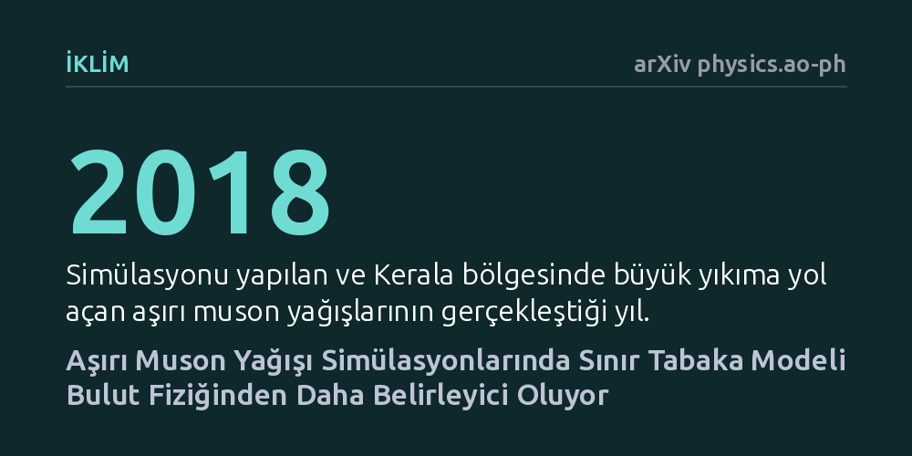

IKLIM · arXiv physics.ao-ph · 2026-09-11
Araştırmacılar, Ağustos 2018 Kerala aşırı yağış felaketini sayısal hava modeliyle simüle ederek tahmin doğruluğunu en çok hangi fiziksel süreçlerin etkilediğini araştırdı. Sonuçlar, yeryüzüne yakın sınır tabaka şeması seçiminin yağış tahmininde bulut mikrofiziğinden daha kritik bir rol oynadığını ortaya koydu.
Aşırı yağış ve sel tahminlerini iyileştirmek için sadece bulut oluşum süreçlerine değil, yeryüzü ile atmosferin ilk katmanı arasındaki türbülans ve enerji alışverişine odaklanmak gerekiyor.

Hindistan'ın güneybatısındaki Batı Gat Dağları, muson rüzgarlarıyla taşınan nemli hava kütlelerini yukarı doğru zorlayarak şiddetli yağışlara yol açar. Ancak dağ etkisiyle katlanan bu orografik yağışları bilgisayar modellerinde gerçeğe yakın tahmin etmek meteoroloji için uzun süredir çözülmesi zor bir problemdir. Ağustos 2018'de Kerala bölgesinde yaşanan ve büyük yıkıma yol açan aşırı yağış felaketi, tahmin modellerinin sınırlarını ve hassasiyetini bir kez daha gündeme getirdi.
Bu tür aşırı hava olaylarını simüle ederken araştırmacıların karşısına karmaşık bir fiziksel etkileşim ağı çıkar. Makalede de ifade edildiği üzere, "topografya, bulut mikrofiziği, kümülüs konveksiyonu, radyasyon ve sınır tabakası süreçleri arasındaki karmaşık etkileşimler" nedeniyle yağışın nereye ve ne kadar düşeceğini hesaplamak modelciler için ciddi bir belirsizlik barındırır.
Araştırmacılar, bu belirsizliğin ana kaynağını anlamak için yaygın olarak kullanılan bölgesel hava tahmin sistemi WRF (Weather Research and Forecasting) modeline başvurdu. Ağustos 2018 Kerala aşırı yağış vakası temel alınarak bilgisayar ortamında farklı parametre kombinasyonlarıyla simülasyon senaryoları kurgulandı.
Deneylerde özellikle iki kritik model bileşeninin göreli etkisi sınandı: yeryüzünün hemen üzerindeki atmosferik sınır tabakayı modelleyen şemalar ve bulut içindeki damlacık, buz ve yağmur tanelerinin oluşumunu yöneten mikrofizik şemaları. Amaç, simülasyon çıktılarındaki yağış miktarını ve dağılımını asıl hangi tercihin daha çok şekillendirdiğini netleştirmekti.
Elde edilen bulgular, model çıktılarında sınır tabaka şeması seçiminin yarattığı farkın, bulut mikrofiziği şemalarının yarattığı farktan belirgin şekilde daha ağır bastığını gösterdi. Yaygın kabulün aksine, aşırı yağış simülasyonunu en çok saptıran veya düzelten etken doğrudan bulutun içindeki parçacık fiziği değil, yer seviyesine yakın türbülans ve enerji transferi süreçleri oldu.
Yeryüzü ile atmosfer arasındaki sürtünme, nem taşınımı ve dikey karışımı temsil eden sınır tabaka modeli değiştikçe, modelin ürettiği yağış haritası köklü biçimde farklılaştı. Buna karşılık, mikrofizik parametrelerinin değiştirilmesi yağış deseninde çok daha sınırlı ve ikincil bir etki yarattı.
Bu sonuç, dağlık coğrafyalarda aşırı muson yağışlarını modelleyen meteorologlar için pratik bir öncelik sıralaması sunuyor. Tahmin doğruluğunu artırmak ve afet erken uyarı sistemlerini güçlendirmek isteyen araştırmacıların, hesaplama kaynaklarını öncelikle sınır tabaka parametrizasyonlarını optimize etmeye ayırması gerektiğine işaret ediyor.
Yine de bulguları değerlendirirken temkinli olmakta fayda var. Çalışma yalnızca tek bir tarihi afetin simülasyonuna dayanıyor ve henüz hakem denetiminden geçmemiş bir önbaskı niteliğinde. Farklı mevsimlerde veya başka dağ sıralarında sınır tabaka ile mikrofizik arasındaki dengenin nasıl değişeceği bağımsız çalışmalarla sınanmalı.